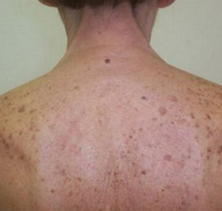
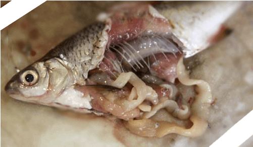
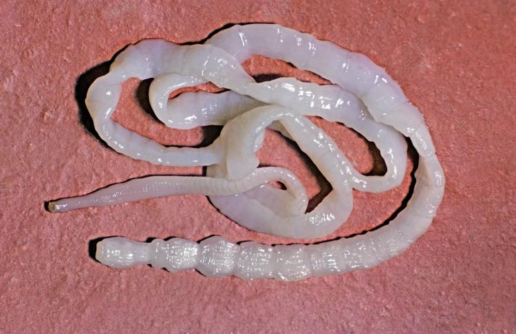
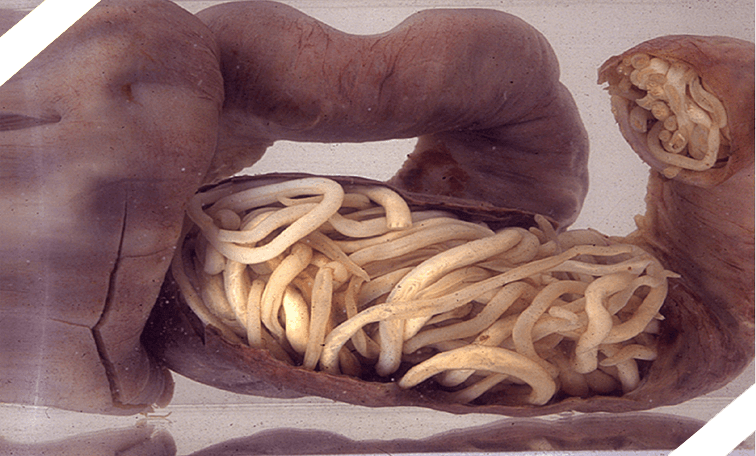
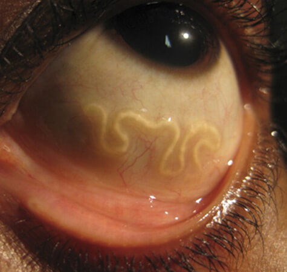
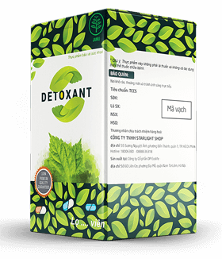

Có lẽ nhiều người trong số chúng ta đã biết rằng, cứ 2 người thì có 1 người bị nghiễm ký sinh trùng. Các đây không lâu, tôi cũng không phải là một ngoại lệ. Đối với nhiều người, đây là một vấn đề rất thiết yếu, nhưng không phải ai cũng biết về nó. Đây cũng là lý do vì sao tôi quyết định lập blog cá nhân, nơi mà tôi chia sẻ câu chuyện chữa lành của mình. Hy vọng nó sẽ giúp được những người đang cố gắng loại bỏ căn bệnh kinh khủng này.
Chào mừng bạn đã đến với blog của tôi! Tôi tên là Phan Đức Long, 38 tuổi, hiện tôi đang làm một nhân viên bình thường của một nhà máy đồ gỗ ở thành phố Hồ Chí Minh. Cũng giống như bao người khác, tôi chẳng bao giờ nghĩ rằng trong cơ thể mình có thể có giun sán, cho mãi đến khi tôi gặp phải các triệu chứng bất thường. Tất cả bắt đầu bằng một loạt các vệt đốm trên lưng và hai bàn chân tôi vào khoảng 2 năm trước. Điều này tôi biết được cũng là nhờ vào các bác sĩ. Lúc đó tôi không thể tưởng tượng được các vệt đốm đó là do ký sinh trùng gây nên! Tôi thậm chí còn chẳng hề để ý đến chúng bởi vì vẫn thấy trong người hoàn toàn bình thường lúc đó.

Mọi người thử nghĩ mà xem!
Hơn một nửa dân số Việt Nam bị nhiễm ký sinh trùng, trong khi đó các bác sĩ không thể đưa ra phương pháp điều trị hiệu quả 100% và thậm chí không phải lúc nào cũng chẩn đoán ra được chúng! Các loại giun sán có thể thâm nhập vào cơ thể người bất kỳ lúc nào, nhưng việc này xảy ra thường xuyên nhất là trong khi ăn. Mọi người hãy cố gắng luôn rửa tay trước khi ăn và tránh ăn các loại cá sống!

Sau một vài tháng kể từ khi các vệt đốm xuất hiện, vợ tôi bắt đầu cảm thấy có mùi hôi phát ra từ miệng tôi. Sau đó thì chính tôi cũng bắt đầu nhận thấy, và cả vị giác cũng có vị hôi thối. Tôi chỉ bắt đầu chú tâm đến bản thân mình khi mà tình trạng sức khỏe đã xấu đi. Tôi thường bị thay đổi tâm trạng đột ngột, rất hay đau đầu và chóng mặt. Vợ tôi nhận thấy những điều bất thường ở tôi và đã khuyên đi gặp bác sĩ để khám, nhưng tôi đã từ chối. Thay vào đó, tôi bắt đầu tìm kiếm thông tin trên mạng Internet. Tôi tìm đọc một số trang web về sức khỏe: tất cả các triệu chứng của tôi đều trùng khớp với việc nhiễm ký sinh trùng. Nhưng tôi chỉ thật sự tin vào điều đó khi mà chính mắt mình thấy một con giun bò ra khỏi người mình! Bạn có thể tưởng tượng được không? Một cảnh tượng thật là kinh tởm!

Lưu ý!
Nếu bạn đang có những triệu chứng giống như vậy – đây chính là lúc để bạn nhìn nhận lại về việc điều trị! Việc trì hoãn có thể dẫn đến những hậu quả không thể cứu chữa được. Ký sinh trùng phá hoại cơ thể từ từ và rất đau đớn! Chỉ trong vài năm trở về đây, tỷ lệ người tử vong do giun sán ở Việt Nam đã đạt đến mức kỷ lục!

Những gì mà tôi nhìn thấy đã khiến tôi phải chắc chắn hành động. Tôi đã bắt đầu với những phương pháp đơn giản mà mình đọc được ở trên mạng Internet hoặc biết được thông qua bạn bè: thử uống các loại chè khác nhau, thậm chí mua một số loại thuốc hay được quảng cáo. Tất cả đều không mang lại kết quả. Nhưng tôi vẫn quyết đến cùng không đi khám bác sĩ. Những gì mà bạn thấy trong bức ảnh bên cạnh đây đã khiến tôi rất sốc. Tí nữa thì tôi lăn ra ngất xỉu! Cái con quái vật này đã chui vào mắt tôi!

Tôi đã phải đi khám bác sĩ ngay lập tức. Sau khi xét nghiệm, bác sĩ đã khuyến cáo nên thực hiện phẫu thuật ngay lập tức. Sau khi tôi hỏi về các phương pháp điều trị thay thế, bác sĩ đã đưa ra một số loại thuốc, nhưng không dám khẳng định về hiệu quả. Trên thực tế tôi rất tin tưởng vào lời của bác sĩ, bởi tôi cũng đã thử dùng các loại thuốc này theo lời khuyên ở trên mạng Internet. Phẫu thuật thì tôi rất sợ, bởi vì ngay khi về đến nhà, tôi đã tìm hiểu và được biết các phẫu thuật này rất mạo hiểm, thậm chí nhiều người cuối cùng còn bị mất cả thị giác! Bác sĩ đã đề nghị tôi chụp phim để xem tình trạng như thế nào và tôi đã đồng ý. Tấm phim cho kết quả thật là khủng khiếp. Trong suốt 38 năm cuộc đời mình, đã có một đống các ký sinh trùng tích lũy trong cơ thể tôi!
Đó thật sự là một cơn tuyệt vọng. Việc sợ hãi phẫu thuật và nguy cơ bị mù đã khiến tôi không thể đứng vững. Cho đến một buổi chiều nọ, vợ tôi nói với tôi rằng đã tìm thấy một sản phẩm mới ở trên một diễn đàn. Tôi cũng không có nhiều sự lựa chọn lúc đó. Tôi hoàn toàn không muốn thực hiện phẫu thuật một chút nào cả, vì vậy chúng tôi đã quyết định đặt mua sản phẩm tuyệt vời mang tên Detoxant này. Và bạn có biết điều gì đã xảy ra không? Nó đã có hiệu quả! Tôi sẽ để lại đường link ở bên dưới, còn bây giờ tôi sẽ kể cho bạn biết nó đã diễn ra như thế nào. Thứ nhất, mặc dù lúc đó sản phẩm chỉ có thể đặt mua từ nước ngoài, nhưng tôi đã nhận được hàng chỉ sau 3 ngày kể từ khi đặt mua. Thật là nhanh! Tôi không thể ngờ được! Nó rất là rẻ tính cả tiền vận chuyển! Thứ hai, tôi đã cảm nhận được hiệu quả ngay trong ngày thứ hai sử dụng! Tình trạng sức khỏe đã được cải thiện. Càng ngày tâm trạng càng tốt hơn, dần dần tôi không còn bị đau đầu nữa, tôi cảm thấy trong người tràn trề sức sống hơn. Sau 5 người, các con giún sán chết đã tự động được đào thải ra ngoài. Rất tiếc là con ký sinh trùng trong mắt tôi vẫn phải đến bệnh viện để lấy ra. Sản phẩm đã giết được nó và nó không thể trống lại được, nên nguy cơ bị mù đã không còn nữa, nhưng vẫn phải cần đến một chút can thiệp của phẫu thuật... Những cái điều kể trên hoàn toàn có thể tránh khỏi nếu tôi sử dụng Detoxant sớm hơn!
Tình trạng của tôi bây giờ rất là tốt! Khỏe mạnh và trần đầy năng lượng! Tôi đang tiết kiệm để trồng lại răng! Vợ tôi không còn phải phàn nàn về mùi hôi ở miệng nữa! Và tất cả những điều này đều là nhờ vào Detoxant! Điều kỳ diệu đã xảy ra. Nếu không có nó, chẳng ai biết được bây giờ tôi đã chết hay là bị mù nữa. Tôi đã đọc đi đọc lại rất nhiều thành phần của sản phẩm và nó chỉ chứa hoàn toàn các thành phần tự nhiên! Thật đáng kinh ngạc! Bằng cách nào mà họ có thể đạt được hiệu quả cao như vậy mà thậm chí không cần sử dụng đến các chất hóa học? Đã được 2 năm năm nay, vợ chồng chúng tôi tuần nào cũng cũng uống mỗi người một viên để phòng ngừa bệnh. Cũng không có gì là lạ khi mà vợ tôi cũng bị nhiễm ký sinh trùng, thật may khi chúng tôi đã tìm thấy giải pháp kịp thời và Detoxant đã giúp chữa trị cho cô ấy. Tôi từ lâu đã khuyên tất cả những người quen của mình, những ai gặp vấn đề giun sán ở trong cơ thể sử dụng Detoxant. Còn bây giờ, khi mà Detoxant đã được bán ở thị trường Việt Nam, tôi đã quyết định viết lại câu chuyện về sự chữa lành kỳ diệu của tôi! Cảm ơn những người là tạo ra Detoxant! Nếu như quý vị đang đọc bài viết này, tôi xin tỏ lòng biết ơn chân thành, quý vị đã cứu sống tôi!
Mua Detoxant ở đâu?
Detoxant có thể mua tại các trang web uy tín của nhà sản xuất. Cách đâu không lâu, tôi đã liên lạc được với họ và họ đã cho phép tôi để mẫu đơn đặt hàng trong bài viết của mình. Vì vậy bạn sẽ không phải mất thời gian để tìm kiếm trang web của sản phầm này. Và hãy khuyên dùng Detoxant cho những người cần giúp đỡ! Nó thật sự có tác dụng, trái ngược với những sản phẩm hay được quảng cáo! Bạn chỉ có thể đặt qua trang web, việc này thậm chí còn thuận tiện hơn là đi ra hiệu thuốc – bạn sẽ nhận được đơn hàng chỉ sau vài giờ! Hãy để ý khuyến mãi! Hiện nay có thể mua được Detoxant với mức giá chỉ còn 50%!

Hãy đặt với giá khuyến mãi trước khi ưu đãi này được chuyển qua cho người đọc tiếp theo!
Mức giá ưu đãi của bạn sẽ kết thúc sau:
00 : 00
Bình luận
Ngọc Anh09.06.2018
Đây không phải là lần đầu tiên tôi được nghe những review tích cực về Detoxant. Vài hôm nữa tôi sẽ đặt mua và kể lại kết quả đạt được cho mọi người nghe.
Phan Đức Long đã trả lời Ngọc Anh09.06.2018
Tuyệt vời! Tôi tin chắc rằng kết quả đạt được sẽ khiến bạn phải ngạc nhiên! Rất mong nhận được tin vui sớm từ bạn.
Minh Tú10.06.2018
Tôi có một người bạn cũng có câu chuyện tương tự, tuy không có giun trong mắt nhưng cũng chính Detoxant đã cứu sống anh ấy. Tôi cũng sẽ bắt đầu sử dụng nó để phòng ngừa...
Lan Anh10.06.2018
Các cơ quan chức năng về sức khỏe đang ở đâu vậy? Thực sự là gần đây tôi đã được nghe rất nhiều về việc người chết vì ký sinh trùng. Phòng ngừa là một việc rất tốt, nhưng cá nhân tôi chưa thể tin tưởng sản phẩm này. Tôi sẽ tiếp tục đọc những gì người khác nói về “Detoxant”.
Phan Đức Long đã trả lời Minh Tú11.06.2018
Đây là một suy nghĩ rất đúng đắn! Detoxant hoàn toàn tự nhiên và vô hại nhưng lại rất đọc hại đối với giun sán :)))
Phan Đức Long đã trả lời Lan Anh11.06.2018
Nghi ngờ của bạn là hoàn toàn hợp lý và việc chấp nhận không sử dụng thuốc là lựa chọn của bạn! Như tôi đã nói và đã tự kiểm chứng bằng kinh nghiệm của mình – Detoxant vô hại đối với con người. Nó chắc chắn sẽ không khiến tình hình của bạn tệ đi!
Xuân Nghĩa14.06.2018
Câu chuyện của bạn làm tôi nhớ đến quá khứ của mình. Khi tôi bị nhiễm ký sinh trùng thì lúc đó chưa hề có Detoxant. Tôi đã phải phẫu thuật và thậm chí điều đó còn chẳng mang lại hiệu quả! Không để giệt trừ hết được đống giun sán đó – đó là những điều tôi từng suy nghĩ 4 năm về trước. Nhưng chỉ gần đây, với sự xuất hiện của Detoxant đã có thể khiến chúng biến mất một lần và mãi mãi! Tôi có thể xác minh lời của tác giả bài viết! Sản phẩm thật sự có tác dụng!
Phan Đức Long đã trả lời Xuân Nghĩa15.06.2018
Chào mừng bạn đến với câu lạc bộ của những người đã khỏi bệnh!